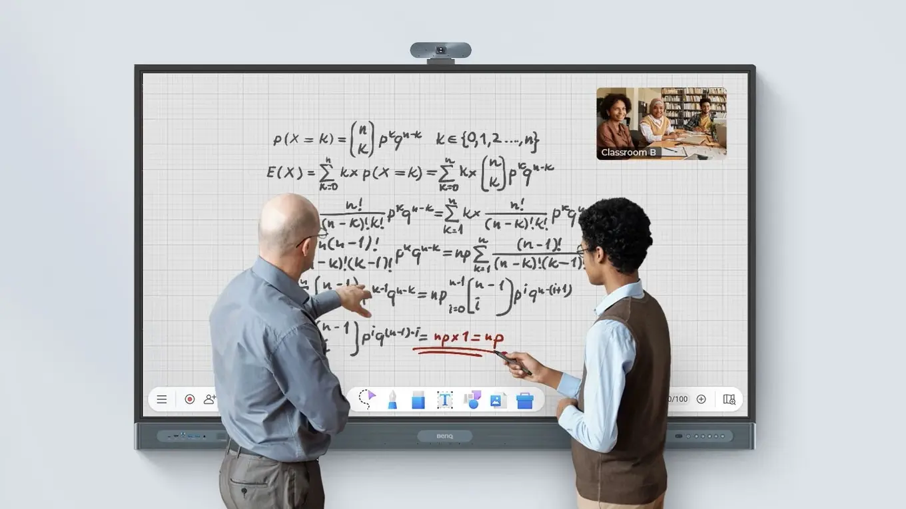

Интерактивное оборудование
в образовании делает процесс обучения более динамичным, наглядным и увлекательным. Оно повышает вовлечённость студентов, упрощает объяснение сложных тем и поддерживает современные цифровые форматы обучения, открывая новые возможности для педагогов и учащихся.
Выбрать формат